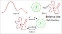

Generative Deep Neural Models
Agenda
- Discriminative VS Generative models
- Embedding-space / manifold hypothesis
- Generative approaches
- Variational Autoencoders
- Normalizing Flows
- Denoising Diffusion Probabilistic Models
- Generative Adversarial Networks
- Performances
- New Generative opportunities
- Conclusions
Discriminative models
Generative models

Discriminative VS Generative

Partition VS fit
Manifold hypothesis

Embedding space
on a lower-dimensional (embedding) space
keeping (and disentangling) the latent characteristics.
Generative approaches
Variational Auto-Encoders

Normalizing Flows
Being $\{f_i\}$ diffeomorphisms:

 $$x = z_0 \rightarrow f_1(z_0) = z_1 \rightarrow \cdots \rightarrow f_n(z_{n-1}) = z_n$$
$$x = z_0 = f_1^{-1}(z_1) \leftarrow \cdots \leftarrow z_{n-1} = f_n^{-1}(z_n)$$
$$x = z_0 \rightarrow f_1(z_0) = z_1 \rightarrow \cdots \rightarrow f_n(z_{n-1}) = z_n$$
$$x = z_0 = f_1^{-1}(z_1) \leftarrow \cdots \leftarrow z_{n-1} = f_n^{-1}(z_n)$$


Generative Adversarial Networks
Train directly a generator network $G$...
$$\small \begin{eqnarray} \mathcal{V}(G,D)&=&\min_G\max_D \mathbb{E}_x\left[\log D(x)\right] \\ &+& \mathbb[E]_z\left[\log(1-D(G(z)))\right] \end{eqnarray} $$
Classification performances
Samples complexity to reach the asymptotic error...
| Logistic regression: $O(n)$ | Naive Bayes: $O(\log n)$ |
Generation quality
Hard task, currently a research topic. Some common metric issues:- Slow
- Biased, comparing distributions requires many samples (~50k).
- Perceptual quality
- Difficulty assessing blurriness, noise, artefacts, ...
- Different media
- Do not work only with images: consider videos, text, audio, ...
Distribution adherence
Some common generator issues:- Memorization
- The model returns samples too similar to the training set.
- Mode collapse
- All generated samples are related to a restricted set of modes.
- Off manifold
- Generated samples lie outside the data manifold (eg. interpolation).

Embedding quality
Some desirable aspects of the empedding space:- Clustering
- The embedding clusters samples with similar characteristics.
- Compression
- Data compressed without significant information loss.
- Disentanglement
- Latent variables change different characteristics of data.
A new world of applications
- Capturing the distribution of data:
-
sample
project 

- Detecting outliers/anomalies:
-
"Autoencoders for Unsupervised Anomaly Segmentation in Brain MR Images: A Comparative Study", Christoph Baur, Stefan Denner, Benedikt Wiestler, Shadi Albarqouni and Nassir Navab
A new world of applications
- Latent-space feature editing:
-

"Interpreting the Latent Space of GANs for Semantic Face Editing", Yujun Shen, Jinjin Gu, Xiaoou Tang, Bolei Zhou
A new world of applications
- Image transformation via conditional generation:
-

"Image-to-Image Translation with Conditional Adversarial Nets", Phillip Isola, Jun-Yan Zhu, Tinghui Zhou, Alexei A. Efros
A new world of applications
- Aerial images semantic segmentation:
-

"What Is Pix2Pix and How To Use It for Semantic Segmentation of Satellite Images?" - Cell membrane and nucleus semantic segmentation:
-

"Cell Image Segmentation by Integrating Pix2pixs for Each Class", Hiroki Tsuda and Kazuhiro Hotta
A new world of applications

Text-to-images short story
- DALL-E (Autoregressive Model)
-
"Zero-Shot Text-to-Image Generation" - GLIDE (Diffusion Model)
-
"GLIDE: Towards Photorealistic Image Generation and Editing with Text-Guided Diffusion Models" - DALL-E 2 (Diffusion Model)
-
"Hierarchical Text-Conditional Image Generation with CLIP Latents" - Imagen (Diffusion Model)
-
"Photorealistic Text-to-Image Diffusion Models with Deep Language Understanding"